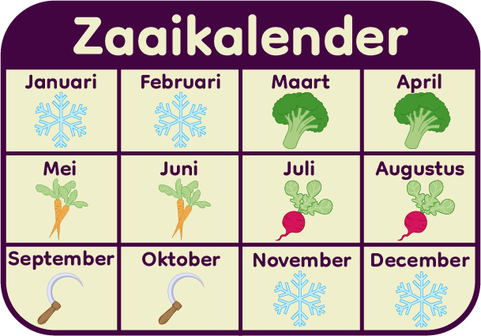

Checklist
De zaaikalender
De beste maanden om te zaaien zijn maart tot en met augustus. Ik heb drie makkelijke planten voor je uitgekozen om per maand te zaaien en te groeien.
Je begint in maart en april met broccoli. In mei en juni kan je de wortels zaaien en in de maanden juli en augustus de radijsjes.
De maanden september en oktober zijn de oogstmaanden.
Vanaf november tot en met februari is de grond te koud en te hard om te gebruiken. Wel kun je in februari al beginnen met het bemesten van de grond.
Bemesten
Water geven
Oogsten